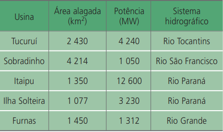
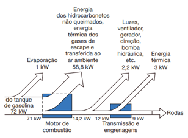
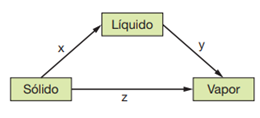
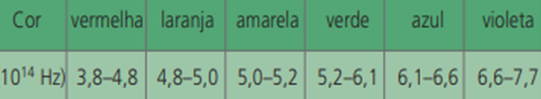
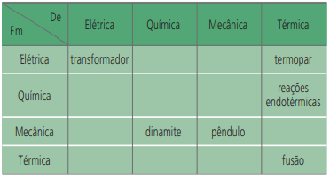
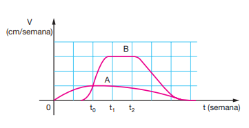
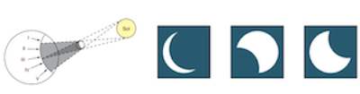
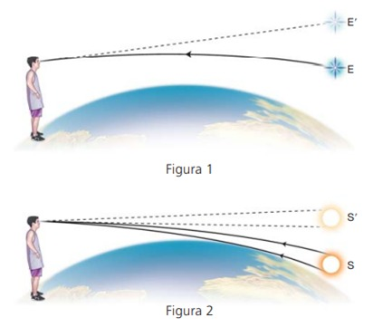
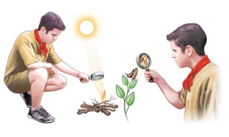

(ENEM) Muitas usinas hidroelétricas estão situadas em barragens. As características de algumas das grandes represas e usinas brasileiras estão apresentadas no quadro abaixo. A razão entre a área da região alagada por uma represa e a potência produzida pela usina nela instalada é uma das formas de estimar a relação entre o dano e o benefício trazidos por um projeto hidroelétrico. A partir dos dados apresentados no quadro, o projeto que mais onerou o ambiente em termos de área alagada por potência foi:

(ENEM) O esquema abaixo mostra, em termos de potência (energia/tempo), aproximadamente, o fluxo de energia, a partir de uma certa quantidade de combustível vinda do tanque de gasolina, em um carro viajando com velocidade constante. O esquema mostra que, na queima da gasolina, no motor de combustão, uma parte considerável de sua energia é dissipada. Essa perda é da ordem de:

(UFSM-RS) Na superfície da Terra, um certo corpo flutua dentro de um recipiente com um líquido incompressível. Se esse sistema for levado à Lua, onde a aceleração gravitacional é menor, o corpo:
(UNIFOR-CE) O esquema abaixo representa as três fases de uma substância pura, e as setas indicam algumas mudanças de fases possíveis. As setas x, y e z correspondem, respectivamente, a:

(UFRN) Um copo de água está à temperatura ambiente de 30 °C. Joana coloca cubos de gelo dentro da água. A análise dessa situação permite afirmar que a temperatura da água irá diminuir porque:
(FEI-SP) Considerando as faixas audíveis para os animais mencionados a seguir, podemos afirmar que: gato – 30 Hz até 45 kHzcão – 20 Hz até 30 kHzhomem – 20 Hz até 20 kHzbaleia – 40 Hz até 80 kHz
(UNICRUZ-RS) Num dia chuvoso, uma pessoa vê um relâmpago entre uma nuvem e a superfície da Terra. Passados 6 s ela ouve o som do trovão correspondente. Sabendo que a velocidade do som no ar é 340 m/s, qual a distância entre a pessoa e o ponto onde ocorreu o relâmpago?
(CEFET-RJ) Vários estudos têm concluído que, em virtude do efeito estufa, do comprometimento da camada de ozônio e de outros fatores, há grande possibilidade de fusão das camadas de gelo das calotas polares e, em consequência, o nível das águas dos oceanos se elevará. Supondo-se que houvesse a fusão da massa total de gelo das calotas polares (m = 4,0 x 108 toneladas, a uma temperatura média de -10 °C), a quantidade de calor necessária para que a massa total se liquefizesse seria igual a: Dados: Cgelo = 0,5 cal/g°C e L = 80 cal/g.
(VUNESP-SP / Adaptada) A fotossíntese é uma reação bioquímica que ocorre nas plantas, para a qual é necessária a energia da luz do Sol, cujo espectro de frequência é dado a seguir.Sabendo que a fotossíntese ocorre predominantemente nas folhas verdes, de qual ou quais faixas de frequências do espectro da luz solar as plantas absorvem menos energia nesse processo?

(UFMT / Adaptada) Um estudante deseja saber quantas árvores por minuto uma usina termelétrica precisa para abastecer com energia elétrica uma cidade do tamanho de Cuiabá. Para fazer uma estimativa desse número, considerou que:I. a cidade de Cuiabá consome 10 kWh por segundo de energia elétricaII. um quilo de madeira é capaz de prover energia suficiente para elevar a temperatura de 5 litros de água de 30ºC para 100ºCIII. uma árvore utilizada numa usina termelétrica corresponde a uma tonelada de madeiraIV. o processo de conversão de energia térmica para elétrica numa usina termelétrica tem um fator de eficiência de 50%.Dado que o calor específico da água é 4 J/gºC, qual o número inteiro que mais se aproxima do número de árvores por minuto que o estudante encontrou em sua estimativa?
(ENEM) A tabela a seguir apresenta alguns exemplos de processos, fenômenos ou objetos em que ocorrem transformações de energia. Nessa tabela, aparecem as direções de transformações de energia. Por exemplo, o termopar é um dispositivo onde energia térmica se transforma em energia elétrica. Dentre os processos indicados na tabela, ocorre conservação de energia:

(UFU-MG) Normalmente, as distâncias entre os fios (desencapados) da rede elétrica de alta-tensão são inferiores às distâncias entre as pontas das asas de algumas aves quando em vôo. Argumentando que isso pode causar a morte de algumas aves, ecologistas da região do Pantanal Mato-grossense têm criticado a empresa de energia elétrica da região. Em relação a esta argumentação, pode-se afirmar que:
(UFBA / Adaptada) Numa usina hidrelétrica, a energia da queda-d’água é transformada em energia cinética de rotação numa turbina, em seguida em energia elétrica, num alternador, e finalmente é distribuída através de cabos de alta-tensão. Os princípios físicos envolvidos na produção e distribuição de energia permitem afirmar: 01. A queda-d’água provoca uma perda de energia potencial gravitacional e um ganho de energia cinética de translação. 02. A energia cinética de rotação da turbina é parcialmente transformada em energia elétrica, usando-se, para essa transformação, o fenômeno de indução eletromagnética. 04. A resistência elétrica de um cabo de transmissão é diretamente proporcional ao seu comprimento e inversamente proporcional à sua área de secção transversal. 08. Os transformadores situados na usina têm, para efeito da distribuição de energia em cabos de alta tensão, menor número de espiras na bobina primária do que na bobina secundária. 16. Os transformadores convertem corrente alternada em corrente contínua e vice-versa. 32. A perda de energia elétrica, num cabo de transmissão, é diretamente proporcional à sua resistência e inversamente proporcional à corrente elétrica que o percorre. Dê como resposta a soma dos valores associados às proposições verdadeiras:
(FM-Itajubá-MG) Um barco atravessa um rio seguindo a menor distância entre as margens, que são paralelas. Sabendo que a largura do rio é de 2,0 km, a travessia é feita em 15 min e a velocidade da correnteza é 6,0 km/h, podemos afirmar que o módulo da velocidade do barco em relação à água é:
(Fuvest-SP) As velocidades de crescimento vertical de duas plantas, A e B, de espécies diferentes, variaram, em função do tempo decorrido após o plantio de suas sementes, como mostra o gráfico. É possível afirmar que:

(Fuvest-SP) Num dia sem nuvens, ao meio-dia, a sombra projetada no chão por uma esfera de 1,0 cm de diâmetro é bem nítida se ela estiver a 10 cm do chão. Entretanto, se a esfera estiver a 200 cm do chão, sua sombra é muito pouco nítida. Pode-se afirmar que a principal causa do efeito observado é que:
(ENEM) A figura mostra um eclipse solar no instante em que é fotografado em cinco diferentes pontos do planeta. Três dessas fotografias estão reproduzidas abaixo. As fotos poderiam corresponder, respectivamente, aos pontos:

(PUCC-SP) Os raios de luz provenientes de uma estrela (E), ao atravessar a atmosfera, sofrem desvios, dando-nos a impressão de que a estrela está mais alta (E’) do que realmente está (Figura 1). Também, por isso, pode-se observar a imagem do Sol (S’) mesmo depois que ele (S) se pôs no horizonte ou antes de nascer (Figura 2). Esses fatos ocorrem, principalmente, devido à:

(UnB-DF / Adaptada) O estabelecimento das ideias a respeito da gravitação universal é considerado uma das conquistas mais importantes no desenvolvimento das ciências em geral e, particularmente, da Física. A sua compreensão é fundamental para o entendimento dos movimentos da Lua, dos planetas, dos satélites e mesmo dos corpos próximos à superfície da Terra.Em relação a esse assunto, a alternativa incorreta:
(UFRJ/ADAPTADA) Um escoteiro usa uma lupa para acender uma fogueira, concentrando os raios solares num único ponto a 20 cm da lupa. Utilizando a mesma lupa, o escoteiro observa os detalhes da asa de uma borboleta ampliada quatro vezes. Calcule a que distância da asa da borboleta o escoteiro está posicionando a lupa:
